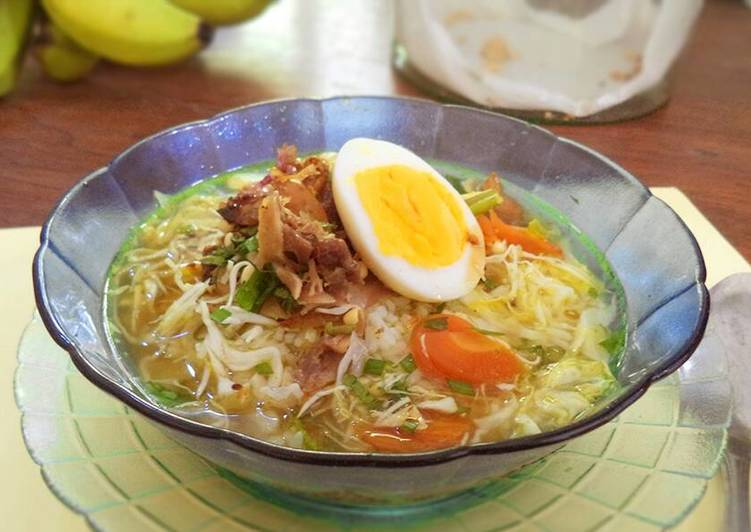

Yup emang bikin kangen itu soto buatan ibu. Kalo beli emang gaada yang bisa ngalahin soto buatan rumah. Mungkin rempah-rempah yang dipakai di sotonya lebih kerasa ya, makanya beda gitu rasanya kalau makan soto yang dibeli di warung-warung.
Bahan-bahan untuk membuat Soto Ayam Kampung
- -1 ekor ayam kampung yang sudah dipotong
- -5 siung bawang merah
- -9 siung bawang putih
- -6 butir kemiri
- -3 cm jahe
- -2 cm kunyit
- -1/4 biji pala
- -1/2 sdm merica butir
- -2 batang sereh
- -5 lembar daun jeruk
- -2 batang bawang daun
- -1 satu sendok makan bawang putih goreng
- -2 mata asam jawa
- -secukupnya garam dan gula
pelengkap:
- -1/4 buah kubis irisan
- -1 buah wortel irisan yang direbus
- -1 batang daun seledri dan kucai irisan
- -1 genggam kecambah
- -secukupnya kripik kentang
- -sesuai selera bawang merah goreng
- -sesuai selera bawang merah goreng
Langkah-langkah:
- 1.Uleg sampai halus bawang, merica, jahe, kunyit, kemiri, dan pala. Kemudian tumis hingga tanak dan harum.
- 2.Masukkan potongan ayam, sereh yang digeprek, daun jeruk dan bumbu halus ke dalam panci. Tambahkan air sepertiga bagian panci. Rebus hingga empuk ayamnya
- 3.Di sini saya menggunakan panci presto karena ayam yang digunakan ayam betina tua, jadi ayam empuk lebih cepat. Kalau ayamnya masih muda (istilahnya kemanggang) menggunakan panci biasa tak apa
- 4.Setelah ayam empuk, tiriskan dari panci dan goreng ayam hingga kecoklatan. Suwir-suwir ayamnya
- 5.Untuk kuah soto, tambahkan air kurang lebih 800 cc ke sisa air rebusan ayam. Tambahkan juga irisan daun bawang, tomat, asam jawa, bawang putih goreng, gula, dan garam. Koreksi rasa dan masak hingga mendidih
- 6.Racik ke dalam mangkuk nasi, suwiran ayam beserta bahan pelengkapnya. Siram dengan kuah dan Soto siap dihidangkan. Jangan lupa untuk menambakan sambal, kecap, dan perasan air jeruk sesuai selera.